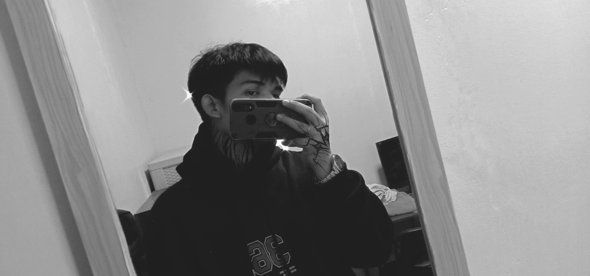

Manila, Philippines 
An Aspiring Front-End Developer | Web Designer
Currently a 3rd-year BSIT student at City of Malabon University, passionate about front-end development and web design. With a keen eye for aesthetics and user experience, he is determined to pursue a career in the tech industry, aiming to create dynamic, user-friendly websites. John's dedication to learning and improving his skills sets him on a path to becoming a successful web developer in the near future.
